Note
Hallo und willkommen in der SunFounder Raspberry Pi & Arduino & ESP32 Enthusiasten-Gemeinschaft auf Facebook! Tauchen Sie tiefer ein in die Welt von Raspberry Pi, Arduino und ESP32 mit anderen Enthusiasten.
Warum beitreten?
Expertenunterstützung: Lösen Sie Nachverkaufsprobleme und technische Herausforderungen mit Hilfe unserer Gemeinschaft und unseres Teams.
Lernen & Teilen: Tauschen Sie Tipps und Anleitungen aus, um Ihre Fähigkeiten zu verbessern.
Exklusive Vorschauen: Erhalten Sie frühzeitigen Zugang zu neuen Produktankündigungen und exklusiven Einblicken.
Spezialrabatte: Genießen Sie exklusive Rabatte auf unsere neuesten Produkte.
Festliche Aktionen und Gewinnspiele: Nehmen Sie an Gewinnspielen und Feiertagsaktionen teil.
👉 Sind Sie bereit, mit uns zu erkunden und zu erschaffen? Klicken Sie auf [hier] und treten Sie heute bei!
FAQ
So ändern Sie den Wi-Fi-Kanal
Das 2,4-GHz-Wi-Fi-Band hat Kanäle von 1 bis 13. Der ESP32 unterstützt die Kanäle 1 bis 11. Andere Geräte, die denselben Kanal verwenden, können Störungen verursachen, was zu Verbindungsproblemen führen kann. Um dies zu vermeiden, können Sie den Kanal ändern. Standardmäßig ist der Kanal auf 1 eingestellt. Es wird empfohlen, beim Wechsel des Kanals 1-2 Kanäle gleichzeitig zu überspringen. Zum Beispiel, wenn der aktuelle Kanal 1 ist, versuchen Sie zuerst Kanal 3 und bei weiterhin schlechtem Signal Kanal 5.
Note
Für das Ändern von Kanälen ist die ESP32 CAM-Firmware-Version 1.4.1 oder höher erforderlich. Weitere Informationen finden Sie unter So aktualisieren Sie die Firmware für ESP32 CAM.
Lassen Sie den ESP32 CAM im Adapter eingesteckt und schalten Sie das Zeus Car ein.
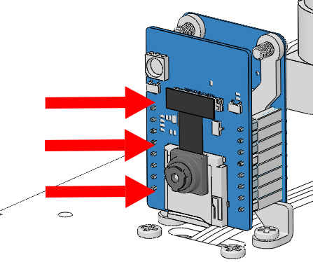Schalten Sie den ESP32 CAM ein, indem Sie den Modusschalter in die Run-Position bewegen und die Reset-Taste drücken, um die R3-Platine neu zu starten.
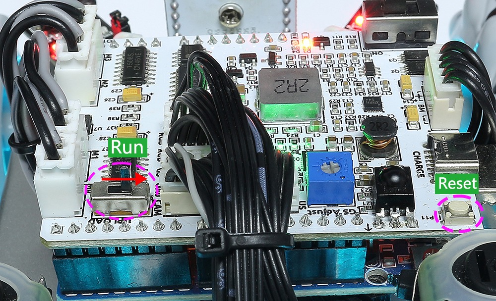Suchen Sie auf Ihrem Mobilgerät (Tablet oder Smartphone) nach
Zeus Carin der Liste der verfügbaren Netzwerke, geben Sie das Passwort12345678ein und verbinden Sie sich damit.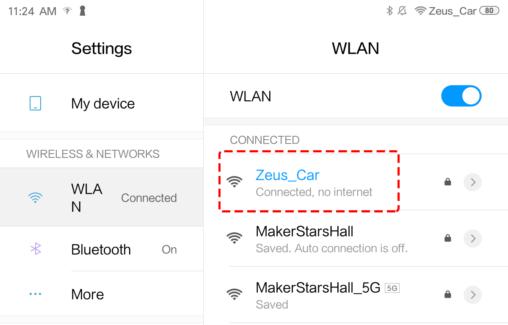Note
Die aktuelle Verbindung erfolgt über den Hotspot des Zeus Cars, daher besteht kein Internetzugang. Wenn Sie aufgefordert werden, das Netzwerk zu wechseln, wählen Sie bitte “Verbunden bleiben”.
Öffnen Sie einen Webbrowser auf Ihrem Mobilgerät und rufen Sie
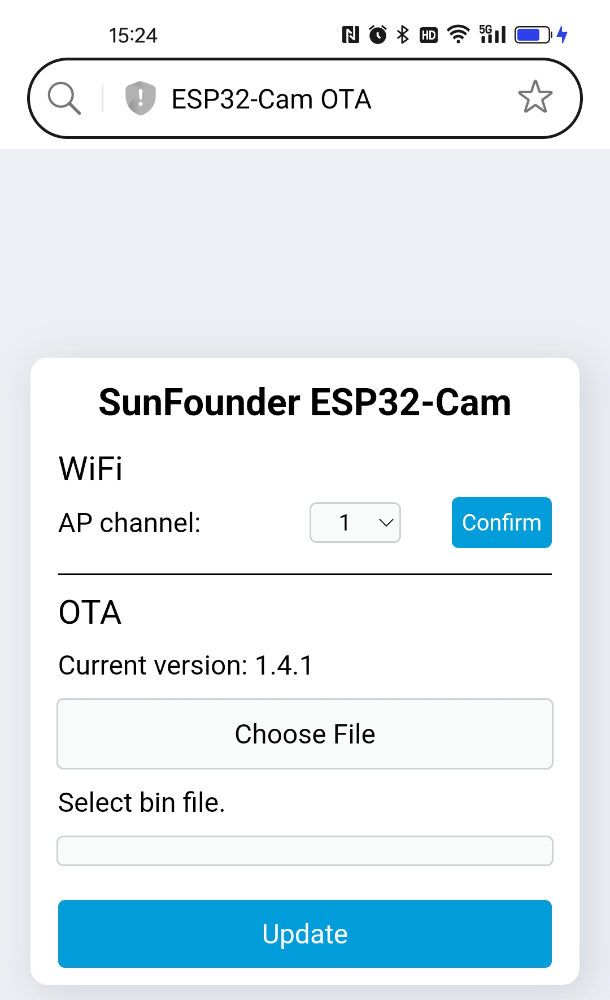http://192.168.4.1auf, um die ESP32 CAM OTA-Update-Seite zu öffnen.Wählen Sie im Abschnitt Wi-Fi AP Channel einen anderen Kanal aus.
Der Standardkanal ist 1. Überspringen Sie beim Wechsel 1-2 Kanäle gleichzeitig (z. B. von Kanal 1 zu 3 und, falls erforderlich, zu 5).
Klicken Sie auf die Schaltfläche Bestätigen, um die Änderungen zu speichern.
Ein Bestätigungs-Popup wird angezeigt, das Sie auffordert, das Gerät zurückzusetzen. Klicken Sie auf Bestätigen.
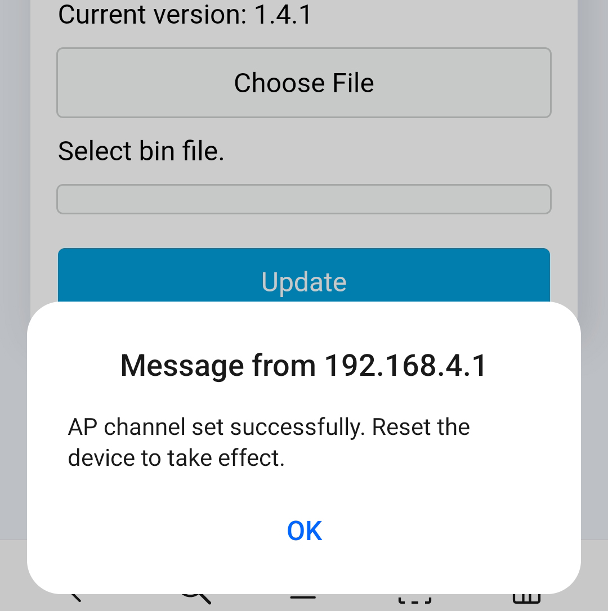Drücken Sie die Reset-Taste, um das Gerät neu zu starten. Das Zeus Car ist jetzt bereit für den normalen Betrieb.
{kind=link}
{kind=link}
{kind=link}
{kind=link}
{kind=link}
{kind=link}
So aktualisieren Sie die Firmware für ESP32 CAM
Befolgen Sie diese detaillierten Schritte, um die Firmware Ihres ESP32 CAM zu aktualisieren:
Lassen Sie den ESP32 CAM im Adapter eingesteckt und schalten Sie das Zeus Car ein.
Schalten Sie den ESP32 CAM ein, indem Sie den Modusschalter in die Run-Position bewegen und die Reset-Taste drücken, um die R3-Platine neu zu starten.
Suchen Sie auf Ihrem Mobilgerät (Tablet oder Smartphone) nach
Zeus Carin der Liste der verfügbaren Netzwerke, geben Sie das Passwort12345678ein und verbinden Sie sich damit.Note
Die aktuelle Verbindung erfolgt über den Hotspot des Zeus Cars, daher besteht kein Internetzugang. Wenn Sie aufgefordert werden, das Netzwerk zu wechseln, wählen Sie bitte “Verbunden bleiben”.
Klicken Sie auf den folgenden Link, um die Firmware-Datei
ai-camera-firmware-v1.4.1-ota.binherunterzuladen und auf Ihrem Mobilgerät zu speichern.Öffnen Sie einen Webbrowser auf Ihrem Mobilgerät und rufen Sie
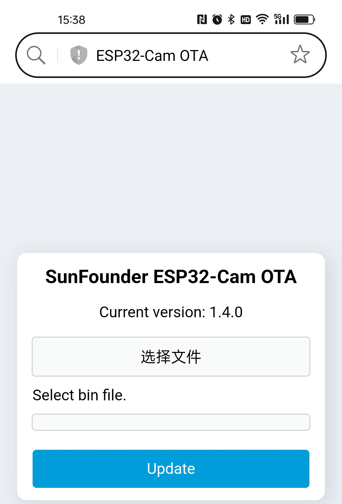http://192.168.4.1auf, um die ESP32 CAM OTA-Update-Seite zu öffnen.Wählen Sie auf der OTA-Seite die Option, um die Firmware-Datei auszuwählen.
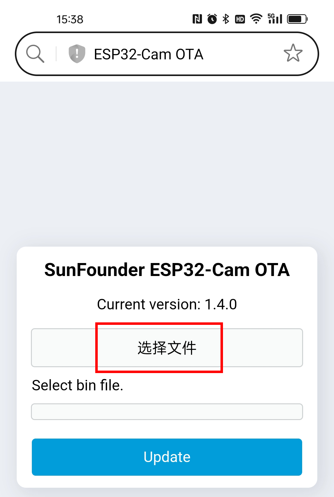Wählen Sie die zuvor heruntergeladene Datei
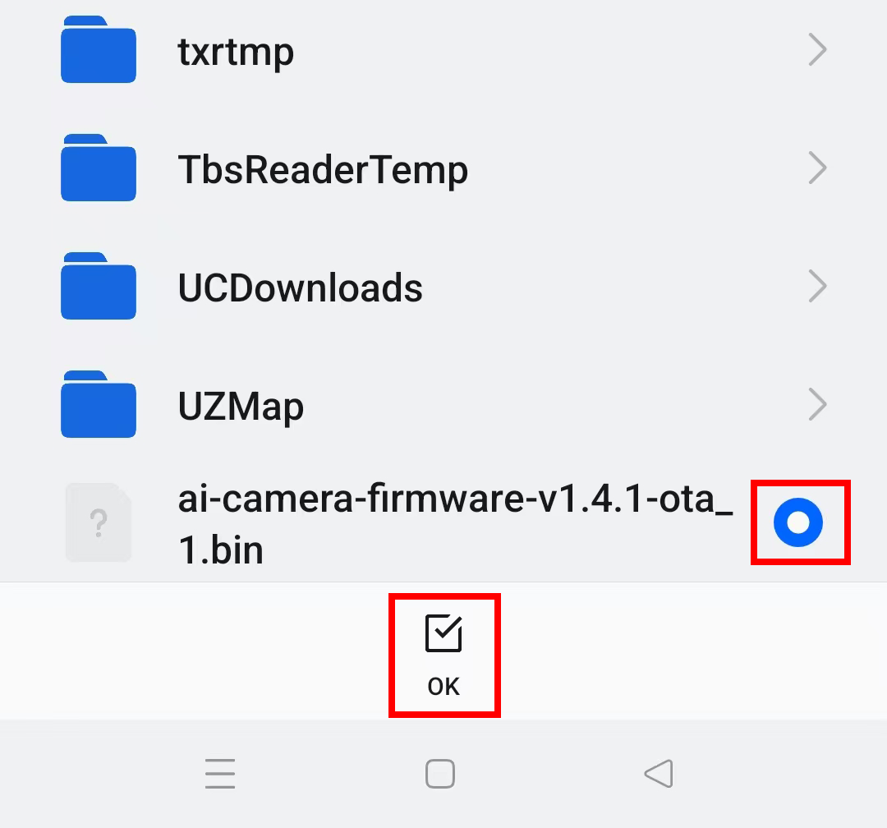ai-camera-firmware-v1.4.1-ota.binvon Ihrem Gerät aus und klicken Sie auf OK.Klicken Sie auf die Schaltfläche Aktualisieren, um den Firmware-Update-Prozess zu starten.
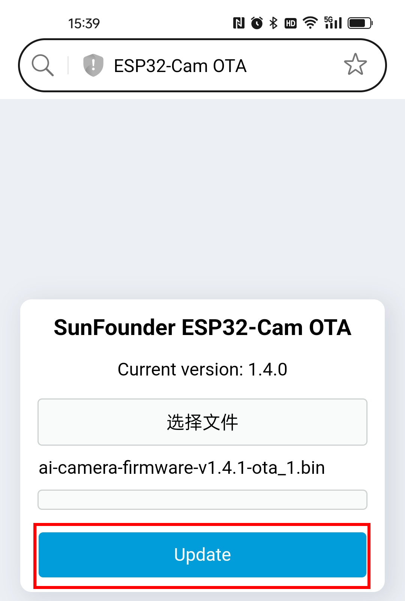Warten Sie, bis die Aktualisierung abgeschlossen ist. Sobald die angezeigte Versionsnummer auf
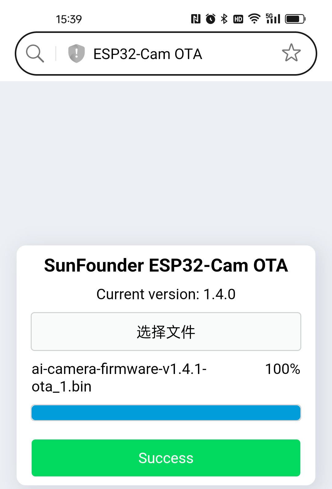1.4.1geändert wurde, war das Update erfolgreich.Nach Abschluss des Updates können Sie den Webbrowser schließen. Drücken Sie die Reset-Taste, um das Gerät neu zu starten. Der ESP32 CAM ist jetzt bereit für den normalen Betrieb.
{kind=link}
{kind=link}
{kind=link}
{kind=link}
{kind=link}
Wie lädt man den zeus-car.ino-Code hoch?
Standardmäßig ist die Uno R3-Platine des Zeus Cars mit der notwendigen Firmware vorinstalliert, sodass Sie es über die APP steuern können. Wenn Ihre R3-Platine mit anderem Code überschrieben wurde und Sie zur Standard-Firmware zurückkehren und mit dem Schnelles Spielen mit APP oder IR-Fernbedienung-Prozess fortfahren möchten, folgen Sie diesen Schritten, um den Code erneut auf Ihre R3-Platine hochzuladen:
Verbinden Sie das Arduino mit einem USB-Kabel mit Ihrem Computer. Der ESP32-CAM und die Arduino-Platine teilen sich dieselben RX- (Empfangs-) und TX- (Sende-) Pins. Daher müssen Sie den ESP32-CAM zunächst trennen, um Konflikte oder mögliche Probleme zu vermeiden.
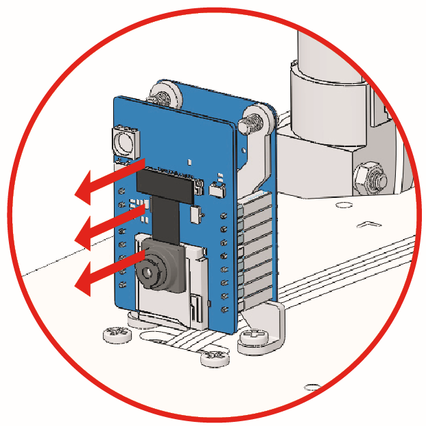Laden Sie die erforderliche Firmware über den folgenden Link herunter:
Entpacken Sie die heruntergeladene ZIP-Datei und doppelklicken Sie auf die Datei
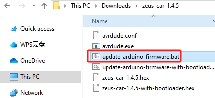update-arduino-firmware.bat, um sie auszuführen.Geben Sie die entsprechende Nummer für das Arduino Uno Ihres Zeus Cars ein (z. B.
1) und drücken Sie Enter, um das Update zu starten.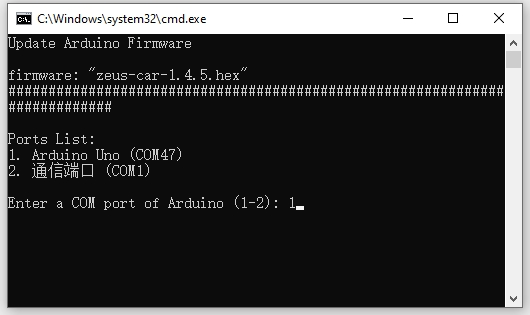Note
Wenn der richtige COM-Port nicht angezeigt wird oder Sie unsicher sind, welcher es ist, trennen Sie andere USB-Geräte von Ihrem Computer und lassen nur den Rover angeschlossen.
Wenn ein Fehler wie
avrdude.exe: stk500_getsync() attempt 1 of 10: not in sync: resp=0xXXauftritt, stellen Sie sicher, dass der ESP32-CAM im ersten Schritt getrennt wurde.
Nach kurzer Zeit wird der neue Code erfolgreich auf die Uno R3-Platine des Zeus Cars hochgeladen. Wenn das Hochladen nach mehreren Versuchen fehlschlägt, können Sie
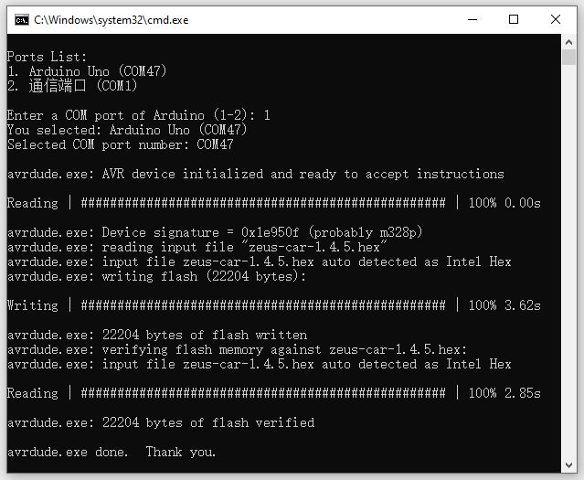update-arduino-firmware-with-bootloader.batausführen.
{kind=link}
Wie steuert man das Zeus Car über das Heim-WiFi?
Standardmäßig ist der Uno R3 mit Code im APP-Modus vorinstalliert. Das bedeutet, dass das Zeus Car einen Hotspot sendet, sodass Sie Ihr Mobilgerät verbinden können, um es über die SunFounder Controller APP zu steuern.
Wenn Sie den Rover lieber über Ihr Heim-WiFi steuern möchten, folgen Sie diesen Schritten, um den angepassten Code auf die Uno-Platine hochzuladen:
Laden Sie die erforderlichen Dateien über den folgenden Link herunter:
Lesen Sie die Installationsanleitung: Download und Installation von Arduino IDE 2.0.
Verwenden Sie den Library Manager, um die Bibliotheken
SoftPWMundSunFounder AI Camerazu installieren. Ausführliche Schritte finden Sie unter Installieren der erforderlichen Bibliotheken.Navigieren Sie zum Verzeichnis
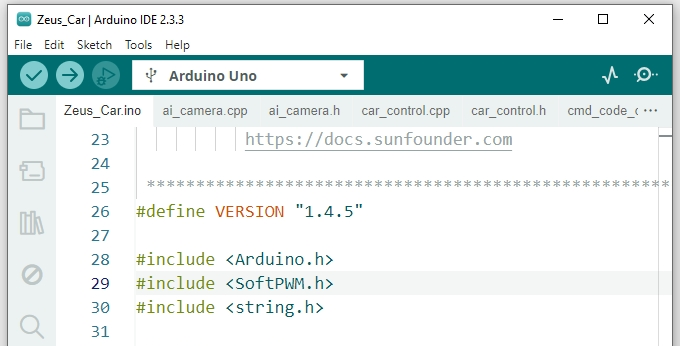zeus-car-main\zeus-carund öffnen Sie die Dateizeus-car.ino.Kommentieren Sie die Zeilen für den AP-Modus aus, heben Sie die Kommentierung der Zeilen für den STA-Modus auf und ersetzen Sie
SSIDundPASSWORDdurch die Zugangsdaten Ihres Heim-WiFi./** Konfigurieren Sie den WiFi-Modus, SSID, Passwort*/ // #define WIFI_MODE WIFI_MODE_AP // #define SSID "Zeus_Car" // #define PASSWORD "12345678" #define WIFI_MODE WIFI_MODE_STA #define SSID "xxxxxxxxxx" #define PASSWORD "xxxxxxxxxx"
Verbinden Sie das Arduino mit einem USB-Kabel mit Ihrem Computer. Der ESP32-CAM und die Arduino-Platine teilen sich dieselben RX- (Empfangs-) und TX- (Sende-) Pins. Daher müssen Sie den ESP32-CAM zunächst trennen, um Konflikte oder mögliche Probleme zu vermeiden.
Klicken Sie in der Arduino IDE auf die Schaltfläche Hochladen, um den geänderten Code auf die Uno-Platine hochzuladen.
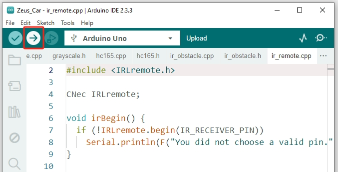Nach erfolgreichem Hochladen des Codes können Sie den ESP32-CAM einstecken und dann den Netzschalter auf EIN schalten, um das Zeus Car zu starten.
Schalten Sie den ESP32 CAM ein, indem Sie den Modusschalter in die Run-Position bewegen und die Reset-Taste drücken, um die R3-Platine neu zu starten.
Stellen Sie sicher, dass Ihr Mobilgerät (Tablet oder Smartphone) mit Ihrem Heim-WiFi-Netzwerk verbunden ist.
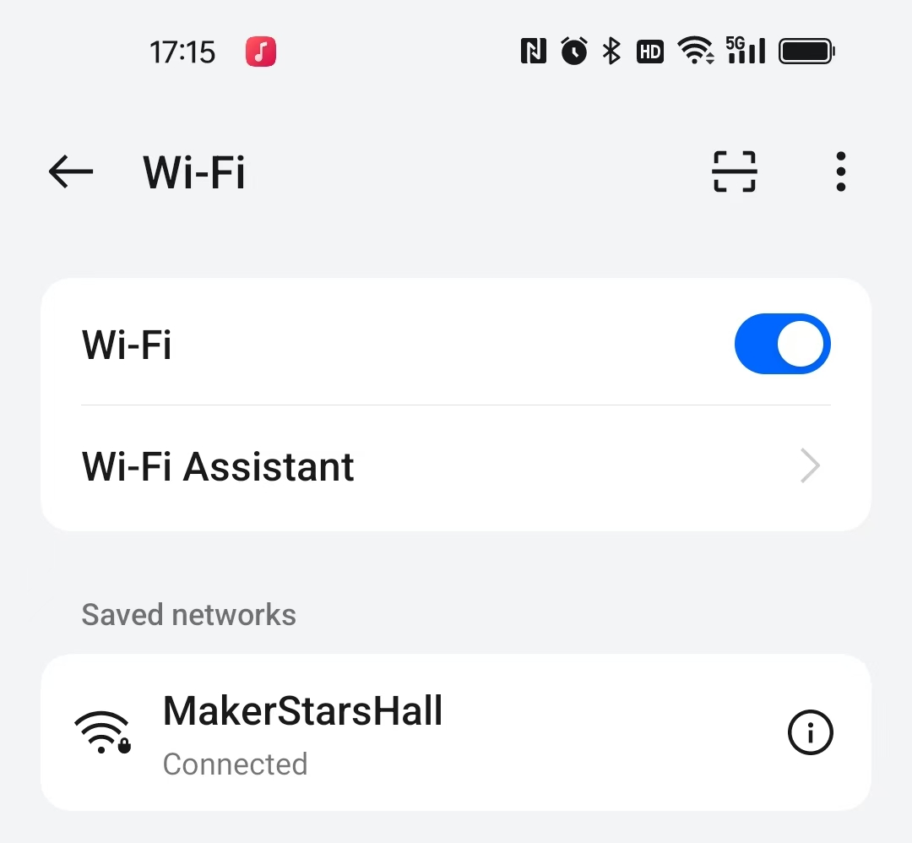Öffnen Sie die SunFounder Controller App, tippen Sie auf das “+”-Symbol, um einen neuen Controller zu erstellen, wählen Sie die “Zeus Car”-Voreinstellung aus, geben Sie einen Namen ein oder tippen Sie auf “Bestätigen”, um fortzufahren.
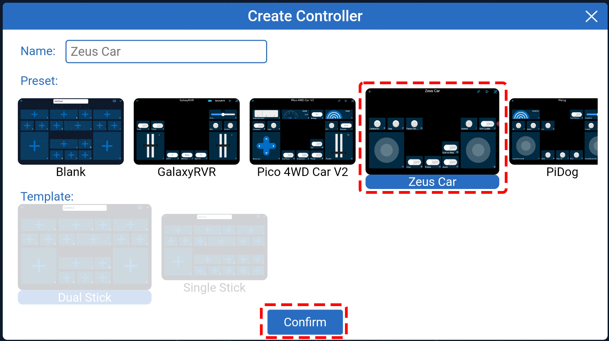Die App sucht automatisch nach dem Zeus Car. Nach kurzer Zeit erscheint eine Meldung mit der Aussage “Erfolgreich verbunden.”

Tippen Sie nun auf die
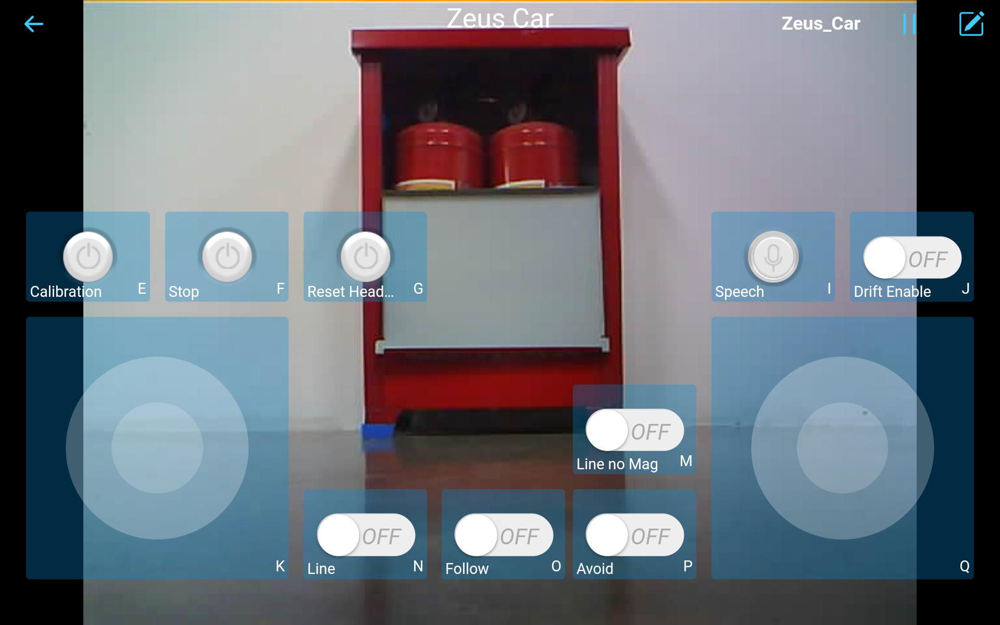 -Schaltfläche, um den Live-Video-Feed von der Kamera anzusehen und den Rover mit den bereitgestellten Widgets zu steuern.
-Schaltfläche, um den Live-Video-Feed von der Kamera anzusehen und den Rover mit den bereitgestellten Widgets zu steuern.
{kind=link}
{kind=link}
{kind=link}
{kind=link}
{kind=link}
Wie dreht man die Kamera um?
Wenn das Kamerabild in der SunFounder Controller-App auf dem Kopf steht, können Sie es leicht über die App korrigieren. Gehen Sie wie folgt vor:
Tippen Sie auf die -Schaltfläche in der oberen rechten Ecke.
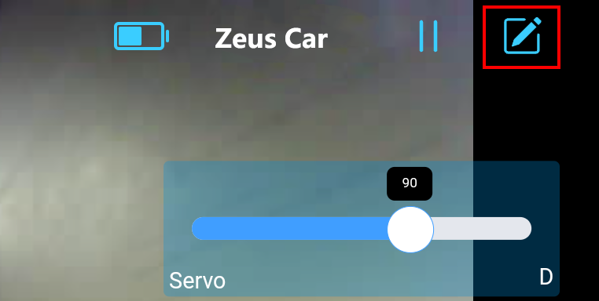Klicken Sie auf die Kamera-Schaltfläche, um ein Popup zu öffnen. Schalten Sie den Invertiert-Schalter ein.
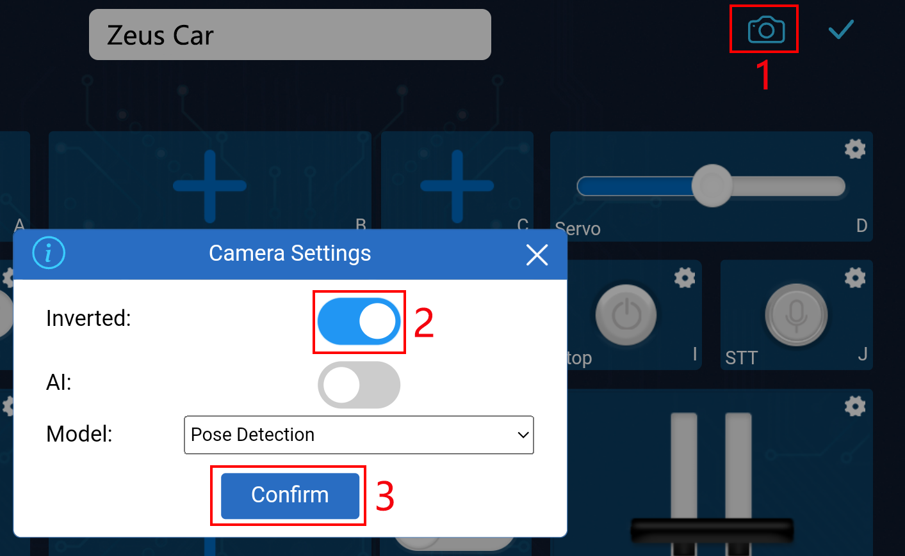Speichern Sie Ihre Einstellungen.
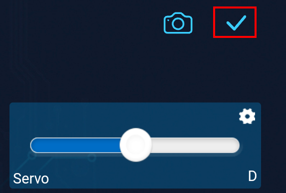Kehren Sie zur Steueroberfläche zurück und klicken Sie auf die
-Schaltfläche.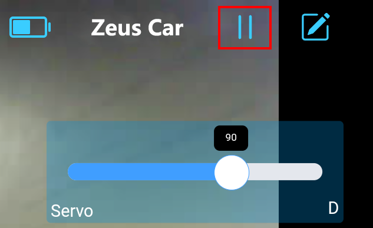Note
Gelegentlich erscheint das Kamerabild nicht. Sollte dies passieren, pausieren Sie den Controller und klicken Sie erneut auf die Starttaste.
{kind=link}
{kind=link}
{kind=link}
{kind=link}
{kind=link}
Kompilierungsfehler: SoftPWM.h: Datei oder Verzeichnis nicht gefunden？
Wenn die Meldung “Kompilierungsfehler: SoftPWM.h: Datei oder Verzeichnis nicht gefunden” erscheint, bedeutet dies, dass die SoftPWM Bibliothek nicht installiert ist.
Bitte beziehen Sie sich auf Installieren der erforderlichen Bibliotheken.
avrdude: stk500_getsync() Versuch 10 von 10: nicht synchronisiert: resp=0x6e?
Wenn die folgende Meldung immer wieder erscheint, nachdem Sie auf den Hochladen-Button geklickt haben und das Board und den Port korrekt ausgewählt haben:
avrdude: stk500_recv(): Programmierer antwortet nicht
avrdude: stk500_getsync() Versuch 1 von 10: nicht synchronisiert: resp=0x00
avrdude: stk500_recv(): Programmierer antwortet nicht
avrdude: stk500_getsync() Versuch 2 von 10: nicht synchronisiert: resp=0x00
avrdude: stk500_recv(): Programmierer antwortet nicht
avrdude: stk500_getsync() Versuch 3 von 10: nicht synchronisiert: resp=0x00
Zu diesem Zeitpunkt sollten Sie sicherstellen, dass die ESP32 CAM nicht angeschlossen ist.
Die ESP32-CAM und das Arduino-Board teilen sich die gleichen RX (Empfang) und TX (Senden) Pins. Deshalb sollten Sie die ESP32-CAM vor dem Hochladen des Codes trennen, um mögliche Konflikte oder Probleme zu vermeiden.
Wie kann ich die STT-Funktion auf meinem Android-Gerät nutzen?
Für die STT-Funktion muss das Android-Mobilgerät mit dem Internet verbunden sein und die Google-Dienstkomponente installiert haben.
Befolgen Sie nun die untenstehenden Schritte.
Ändern Sie den AP-Modus der Datei
Zeus_Car.inoin den STA-Modus.Öffnen Sie die Datei
Zeus_Car.ino, die sich im Verzeichniszeus-car-main/Zeus_Carbefindet.Kommentieren Sie dann den mit dem AP-Modus verbundenen Code aus. Entfernen Sie die Kommentierung für den mit dem STA-Modus verbundenen Code und tragen Sie die
SSIDund dasPASSWORTIhres Heim-WLANs ein./** Konfigurieren Sie den WLAN-Modus, SSID, Passwort */ // #define WIFI_MODE WIFI_MODE_AP // #define SSID "Zeus_Car" // #define PASSWORD "12345678" #define WIFI_MODE WIFI_MODE_STA #define SSID "xxxxxxxxxx" #define PASSWORD "xxxxxxxxxx"
Speichern Sie diesen Code, wählen Sie das richtige Board (Arduino Uno) und den Port und klicken Sie dann auf die Schaltfläche Hochladen, um ihn auf das R3-Board hochzuladen.
Suchen Sie in Google Play nach
googleund installieren Sie die unten gezeigte App.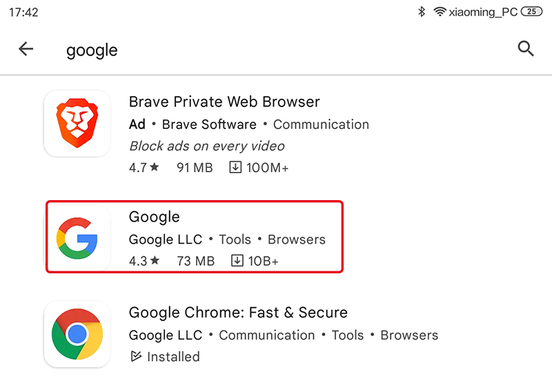Verbinden Sie Ihr Mobilgerät mit demselben WLAN, das Sie im Code eingetragen haben.
Öffnen Sie den zuvor in SunFounder Controller erstellten Controller und verbinden Sie ihn über die Schaltfläche
 mit dem
mit dem Zeus_Car.Tippen und halten Sie das
 Widget gedrückt, nachdem Sie die Schaltfläche angeklickt haben. Ein Hinweis wird angezeigt, dass zugehört wird. Sagen Sie den folgenden Befehl, um das Auto zu bewegen.
Widget gedrückt, nachdem Sie die Schaltfläche angeklickt haben. Ein Hinweis wird angezeigt, dass zugehört wird. Sagen Sie den folgenden Befehl, um das Auto zu bewegen.stop: Alle Bewegungen des Autos können gestoppt werden.pause: Die Funktion ähnelt der von Stop, aber wenn die Vorderseite des Autos nicht in die ursprünglich eingestellte Richtung zeigt, wird es sich langsam in die eingestellte Richtung bewegen.forwardbackwardleft forwardleft backwardright forwardright backwardmove leftmove right
{kind=link}
{kind=link}